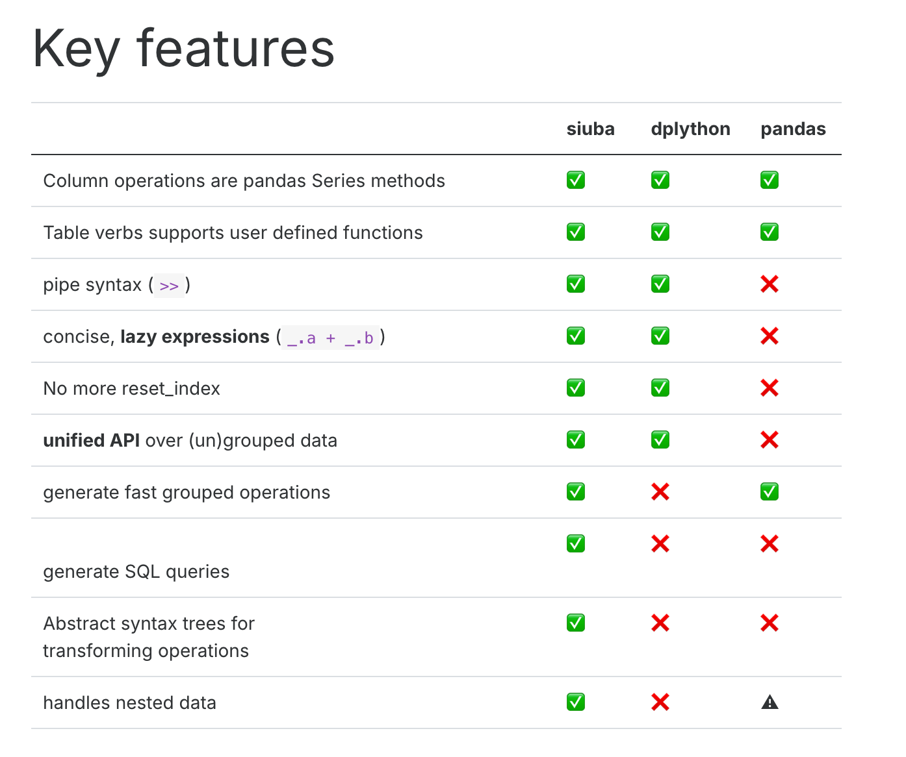

Code
import sys
print(sys.version) siuba (小巴) is a port of dplyr and other R libraries with seamless support for pandas and SQL
siuba (小巴) is a port of dplyr and other R libraries with seamless support for pandas and SQL

import sys
print(sys.version)import os
os.system('pip install pandas')import os
#os.system('pip install --upgrade pandas')
os.system('pip install siuba')import pandas as pd
import numpy as np
import matplotlib.pylab as plt
import seaborn as sns
from siuba.siu import call
from siuba import _, mutate, filter, group_by, summarize,show_query
from siuba import *
from siuba.data import mtcars,penguinsimport os
os.system('pip show siuba')small_mtcars = mtcars >> select(_.cyl, _.mpg, _.hp)>> head(5)list(small_mtcars)small_mtcars >> select(_.cyl, _.mpg)small_mtcars >> select(_.contains("p"))small_mtcars >> select(0,2)small_mtcars >> select(_[0:3])small_mtcars >> select(~_.cyl)small_mtcars >> rename(new_name_mpg = _.mpg)mtcars.head()>> mutate(gear2 = _.gear+1
,gear3=if_else(_.gear > 3, "long", "short")
,qsec2=case_when({
_.qsec <= 17: "short",
_.qsec <= 18: "Medium",
True: "long"
})
)mtcars.head()>> transmute(gear2 = _.gear+1)mtcars>> filter(_.gear ==4)mtcars >> filter((_.cyl >4) & (_.gear == 5))mtcars >> filter((_.cyl == 6) | (_.gear == 5))small_mtcars>>head(3)# not in siuba, in pandas
small_mtcars.tail(3)# not in siuba, in pandas
mtcars.iloc[[4]]# not in siuba, in pandas
mtcars.iloc[[0,4]]# not in siuba, in pandas
mtcars.iloc[0:4]mtcars.sample(5, random_state=42)# not available in siuba yet
#from siuba import bind_rows# using pandas
# get 1 to 4 rows
data1=mtcars.iloc[0:4]
# get 9 rows
data2=mtcars.iloc[10:11]
data3=pd.concat([data1, data2], ignore_index = True,axis=0)
data3# not available in siuba yet
#from siuba import bind_columns# using pandas
data1=small_mtcars>>select(_.mpg)
data2=small_mtcars>>select(_.cyl)
data3=pd.concat([data1, data2],axis=1)
data3tbl_query = (mtcars
>> group_by(_.cyl)
>> summarize(avg_hp = _.hp.mean()
,min_hp=_.hp.min()
,max_hp=_.hp.max()
,totol_disp=_.disp.sum()
)
)
tbl_querymtcars >> group_by(_.cyl) >> summarize(n = _.shape[0])mtcars >> group_by(_.cyl) >> summarize(n = _.hp.nunique())small_mtcars >> arrange(_.hp)small_mtcars >> arrange(-_.hp)small_mtcars >> arrange(_.cyl, -_.mpg)lhs = pd.DataFrame({'id': [1,2,3], 'val': ['lhs.1', 'lhs.2', 'lhs.3']})
rhs = pd.DataFrame({'id': [1,2,4], 'val': ['rhs.1', 'rhs.2', 'rhs.3']})lhsrhsresult=lhs >> inner_join(_, rhs, on="id")
resultresult=rhs >> full_join(_, lhs, on="id")
resultresult=lhs >> left_join(_, rhs, on="id")
resultkeep data in left which not in right
result=lhs >> anti_join(_, rhs, on="id")
resultkeep data in right which not in left
result=rhs >> anti_join(_, lhs, on="id")
resultcosts = pd.DataFrame({
'id': [1,2],
'price_x': [.1, .2],
'price_y': [.4, .5],
'price_z': [.7, .8]
})
costsBelow 3 method will give same result
# selecting each variable manually
costs >> gather('measure', 'value', _.price_x, _.price_y, _.price_z)other way:
# selecting variables using a slice
costs >> gather('measure', 'value', _["price_x":"price_z"])other way:
# selecting by excluding id
costs >> gather('measure', 'value', -_.id)costs_long= costs>> gather('measure', 'value', -_.id)
costs_longcosts_long>> spread('measure', 'value')df = pd.DataFrame({'text': ['abc', 'DDD','1243c','aeEe'], 'num': [3, 4,7,8]})
dfdf>> mutate(text_new=_.text.str.upper())df>> mutate(text_new=_.text.str.lower())df>> mutate(text_new1=if_else(_.text== "abc",'T','F')
,text_new2=if_else(_.text.str.startswith("a"),'T','F')
,text_new3=if_else(_.text.str.endswith("c"),'T','F')
,text_new4=if_else(_.text.str.contains("4"),'T','F')
)df>> mutate(text_new1=_.text+' is '+_.text
)Use .str.replace(…, regex=True) with regular expressions to replace patterns in strings.
For example, the code below uses “p.”, where . is called a wildcard–which matches any character.
df>> mutate(text_new1=_.text.str.replace("a.", "XX", regex=True)
)Use str.extract() with a regular expression to pull out a matching piece of text.
For example the regular expression “^(.*) ” contains the following pieces:
a matches the literal letter “a”
.* has a . which matches anything, and * which modifies it to apply 0 or more times.
df>> mutate(text_new1=_.text.str.extract("a(.*)")
,text_new2=_.text.str.extract("(.*)c")
)df_dates = pd.DataFrame({
"dates": pd.to_datetime(["2021-01-02", "2021-02-03"]),
"raw": ["2023-04-05 06:07:08", "2024-05-06 07:08:09"],
})
df_datesfrom datetime import datetime
df_date=df_dates>>mutate(month=_.dates.dt.month_name()
,date_format_raw = call(pd.to_datetime, _.raw)
,date_format_raw_year=_.date_format_raw.dt.year
)
df_datedf_date.info()from sqlalchemy import create_engine
from siuba.sql import LazyTbl
from siuba import _, group_by, summarize, show_query, collect
from siuba.data import mtcars
# copy in to sqlite, using the pandas .to_sql() method
engine = create_engine("sqlite:///:memory:")
mtcars.to_sql("mtcars", engine, if_exists = "replace")# Create a lazy SQL DataFrame
tbl_mtcars = LazyTbl(engine, "mtcars")
tbl_mtcars# connect with siuba
tbl_query = (tbl_mtcars
>> group_by(_.mpg)
>> summarize(avg_hp = _.hp.mean())
)
tbl_query tbl_query >> show_query()because lazy expressions,the collect function is actually running the sql.
data=tbl_query >> collect()
print(data)https://siuba.org/